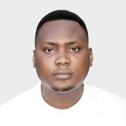

Paul Dole | WDD 130
Hello! My name is Paul Dole and i am from Abidjan, Cote D'ivoire. I enjoy programming and learning new things. I am one of six children and served a mission 4 years ago. My passion for programing has been pushing me to dream big. My goal is to one day change the world, in terms of technology by innovating and inventing solutions that would benefit people of all social ranks.